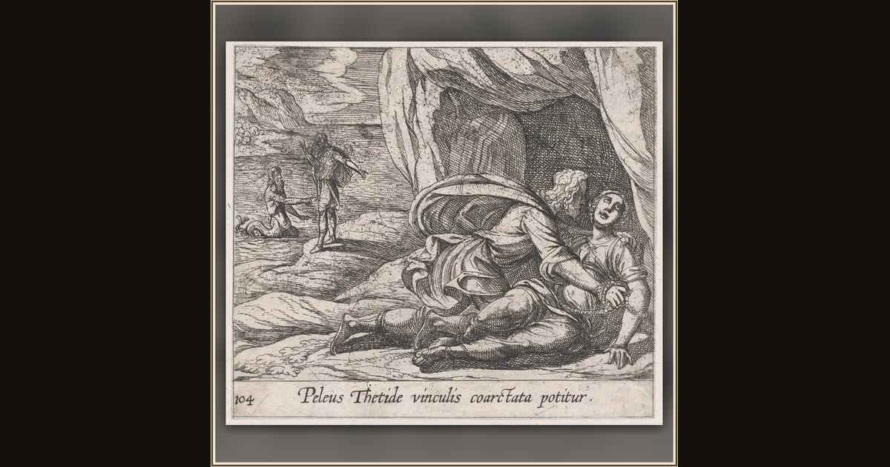

Plate 104: Peleus Embracing Thetis (Peleus Thetide vinculis coarctata potitur), from Ovid's 'Metamorphoses'
Antonio Tempesta · 1606 · met
Peleus clasps Thetis beside a sea cave; in the play, she returns to him and invokes their long-ago marriage before speaking of their son Achilles (1231–1232) Explore its place in Euripides's Plays, Andromache, line 1230.